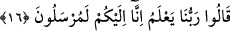
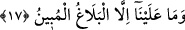
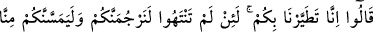
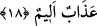

gerekli/zorunlu olur?
Bu söz önce zikredilen söze ilâvedir. Çünkü bu söz de inkârı gerekli kılar. “Siz”
Rahman’ın elçisi olma iddiâsında “ancak yalan söylüyorsunuz.”
16. (Elçiler) dediler ki: “Rabbimiz biliyor; biz gerçekten size gönderilmiş
elçileriz.”
“(Elçiler) dediler ki: “Siz bizi yalanlasanız da “Rabbimiz” huzûrî ilmi ile “biliyor;
biz gerçekten size gönderilmiş elçileriz.”
Elçiler Allah’ın ilmini şâhid gösterdiler ki bu te’kid konusunda yemin yerine geçer.
Ayrıca bunda onları Allah’ın ilmine karşı çıkmaktan sakındırma da vardır. Elçiler
onların inkârlarının şiddetli olduğunu görünce sözlerine pekiştirme için olan “lâm”
harfini de eklemişlerdir.
17. “Bizim vazifemiz, açık bir şekilde Allah’ın buyruklarını size tebliğ etmekten
başka bir şey değildir” dediler.
“Bizim” Rabbimiz tarafından “vazifemiz, açık bir şekilde Allah’ın buyruklarını size
tebliğ etmekten başka bir şey değildir” yani doğruluğuna şâhid olan mucizelerle açık
ve âşikâr bir tebliğ ile O’nun elçiliğini tebliğ etmekten ibârettir “dediler.” Çünkü
iddiâyı isbat etmek için açık delil gereklidir. Biz bu elçiliği tebliğ sorumluluğundan
çıkmış bulunuyoruz. Artık bu konuda Rabbimiz tarafından bize bir muâheze/kınama
yoktur. Sizi îman etmeye zorlamaya da doğru olduğumuzu kalplerinize koymaya da
gücümüz yetmez. Îman ederseniz ne âlâ, aksi halde üzerinize azab inecektir.
Bu sözde şu îmâ vardır. Onların hakkı inkâr etmeleri, hakkın durumunun ve
doğruluğunun gizli/kapalı oluşundan değildir. Sırf kendi inadları ve Câhiliyye taassubu
yüzündendir.
18. (Bunun üzerine onlar:) “Doğrusu siz bize uğursuz geldiniz. Eğer bu işten